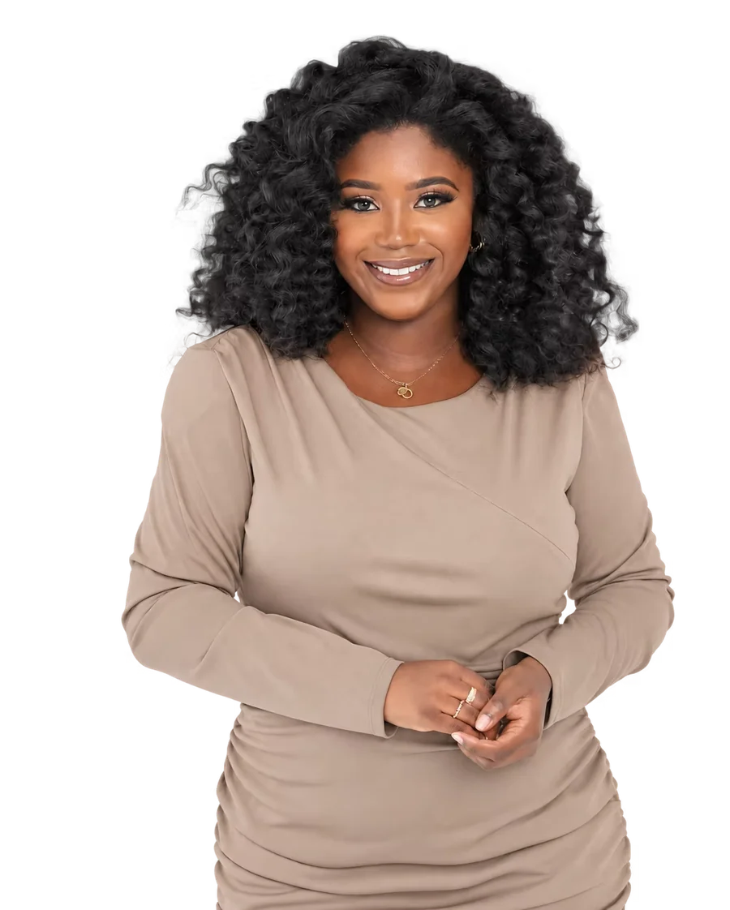

Brand Strategy
Positioning·Messaging·Brand Development·Audience Research
Brand Marketing & Communications Strategist
Building brands through strategy, storytelling, experiences, and community.
I'm an integrated marketer with 5+ years of experience helping brands grow through brand strategy, campaigns, content, digital marketing, events, partnerships, and audience engagement. My experience spans consumer, beauty, nonprofit, B2B, and mission-driven organizations.

Capabilities
Positioning·Messaging·Brand Development·Audience Research
Campaign Strategy·Digital·Email·Social·Content
Conferences·Activations·Brand Environments·Sponsorships
Audience Growth·Community·Partnerships·Influencer Marketing
Copywriting·PR·Stakeholder Communications·Brand Storytelling
Measured outcomes
Strategy is only as good as what it moves. A snapshot of the outcomes behind the work.
National recognition for a North Jersey nonprofit brand in one year.
Increase in annual service utilization across a national government-led program.
Revenue growth for a startup haircare brand in six months.
Qualified leads generated through paid digital in a highly specialized B2B market.
Instagram growth for an emerging skincare brand in three months.
Case studies
A closer look at the brands and campaigns I've helped shape, grow, and bring to life across different industries.

How do you create one brand out of 14 organizations, each with their own identities? See how research, strategy, messaging, and execution came together to build one recognizable national brand.

See how content, community, influencer partnerships, and PR helped scale an emerging haircare brand enough for its founder to leave her full-time career and focus on the business.
In a highly specialized B2B market with a notoriously narrow audience, I helped turn a stronger digital presence and first-time paid campaigns into qualified leads.
Hands-on
The big picture matters, and so does the follow-through. These are the channels and deliverables I build and run day to day.
Experiential
I bring brands to life through conferences, activations, branded environments, promotional strategy, sponsorships, and live experiences, connecting the brand people see online with what they experience in person.


About
My relationship with marketing has always lived at the intersection of creativity, culture, and consumer behavior. Before building my career in marketing, I worked as a makeup artist, and today I'm also a working pianist and vocalist. All of my personal and professional experiences have shaped how I think about audiences, storytelling, performance, identity, and what makes people genuinely connect with a brand.
I bring that creative perspective into every strategy I build, by balancing intuition with research, personality with positioning, and big ideas with measurable outcomes.